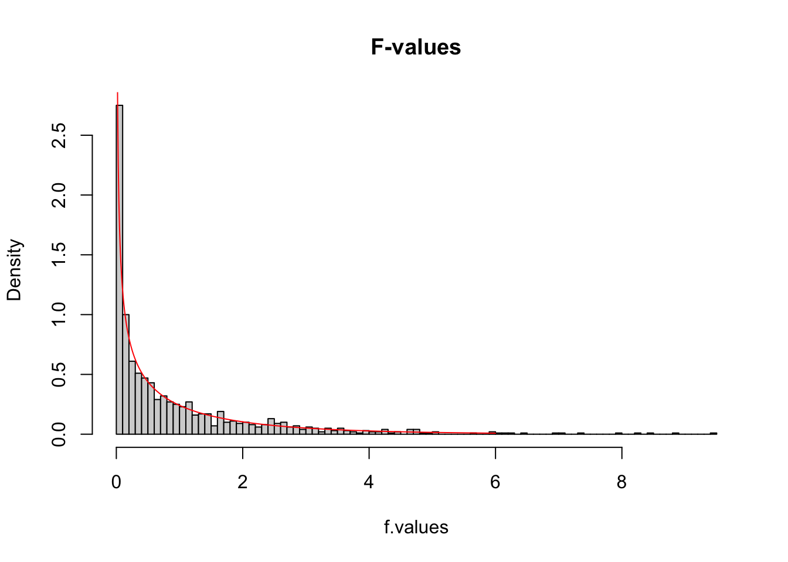
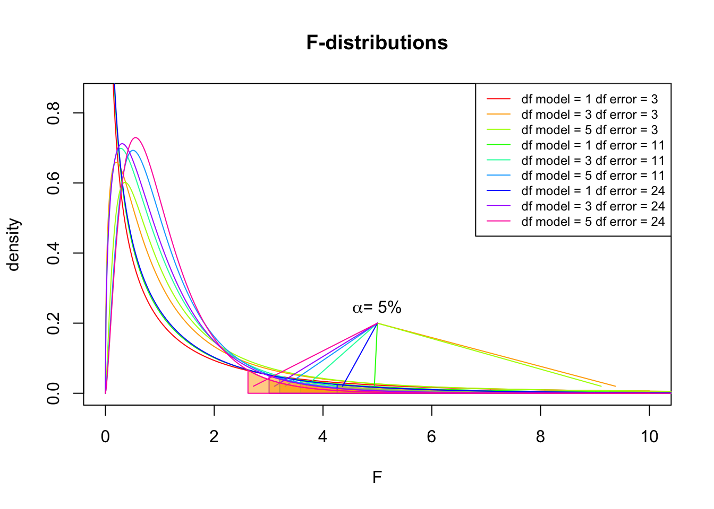

ANOVA
F-distribution & One-way independent
Klinkenberg
30 sep 2020
Inhoud
F-distribution
Ronald Fisher

The F-distribution, also known as Snedecor’s F distribution or the Fisher–Snedecor distribution (after Ronald Fisher and George W. Snedecor) is, in probability theory and statistics, a continuous probability distribution. The F-distribution arises frequently as the null distribution of a test statistic, most notably in the analysis of variance; see F-test.
Sir Ronald Aylmer Fisher FRS (17 February 1890 – 29 July 1962), known as R.A. Fisher, was an English statistician, evolutionary biologist, mathematician, geneticist, and eugenicist. Fisher is known as one of the three principal founders of population genetics, creating a mathematical and statistical basis for biology and uniting natural selection with Mendelian genetics.
Population distribution
layout(matrix(c(2:6,1,1,7:8,1,1,9:13), 4, 4))
n = 56 # Sample size
df = n - 1 # Degrees of freedom
mu = 120
sigma = 15
IQ = seq(mu-45, mu+45, 1)
par(mar=c(4,2,0,0))
plot(IQ, dnorm(IQ, mean = mu, sd = sigma), type='l', col="red")
n.samples = 12
for(i in 1:n.samples) {
par(mar=c(2,2,0,0))
hist(rnorm(n, mu, sigma), main="", cex.axis=.5, col="red")
}
F-statistic
\[F = \frac{{MS}_{model}}{{MS}_{error}} = \frac{{SIGNAL}}{{NOISE}}\]
So the \(F\)-statistic represents a signal to noise ratio by deviding the model variance component by the error variance component.
A samples
Let’s take two sample from our normal populatiion and calculate the F-value.
x.1 = rnorm(n, mu, sigma)
x.2 = rnorm(n, mu, sigma)
data <- data.frame(group = rep(c("s1", "s2"), each=n), score = c(x.1,x.2))
F = summary(aov(lm(score ~ group, data)))[[1]]$F[1]
F## [1] 1.775447More samples
let’s take more samples and calculate the F-value every time.
n.samples = 1000
f.values = vector()
for(i in 1:n.samples) {
x.1 = rnorm(n, mu, sigma); x.1
x.2 = rnorm(n, mu, sigma); x.2
data <- data.frame(group = rep(c("s1", "s2"), each=n), score = c(x.1,x.2))
f.values[i] = summary(aov(lm(score ~ group, data)))[[1]]$F[1]
}
k = 2
N = 2*n
df.model = k - 1
df.error = N - k
hist(f.values, freq = FALSE, main="F-values", breaks=100)
F = seq(0, 6, .01)
lines(F, df(F,df.model, df.error), col = "red")
F-distribution
So if the population is normaly distributed (assumption of normality) the f-distribution represents the signal to noise ration given a certain number of samples (\({df}_{model} = k - 1\)) and sample size (\({df}_{error} = N - k\)).
The F-distibution therefore is different for different sample sizes and number of groups.
F-distribution
multiple.n = c(5, 15, 30)
multiple.k = c(2, 4, 6)
multiple.df.model = multiple.k - 1
multiple.df.error = multiple.n - multiple.k
col = rainbow(length(multiple.df.model) * length(multiple.df.error))
F = seq(0, 10, .01)
plot(F, df(F, multiple.df.model[1], multiple.df.error[1]), type = "l",
xlim = c(0,10), ylim = c(0,.85),
xlab = "F", ylab="density",
col = col[1], main="F-distributions" )
dfs = expand.grid(multiple.df.model, multiple.df.error)
for(i in 2:dim(dfs)[1]) {
lines(F, df(F, dfs[i,1], dfs[i,2]), col=col[i])
critical.f <- qf(.95, dfs[i,1], dfs[i,2])
f.alpha <- seq(critical.f, 1000, .01)
polygon(c(f.alpha, rev(f.alpha)), c(df(f.alpha, dfs[i,1], dfs[i,2]), f.alpha*0 ), col= rgb(1,.66,0, .5), border = col[i])
lines(c(critical.f+.1, 5), c(.02, .2), col=col[i])
}
text(5,.2, expression(paste(alpha, "= 5%")), pos =3)
legend("topright", legend = paste("df model =",dfs[,1], "df error =", dfs[,2]), lty=1, col = col, cex=.75)
F-distribution

Nonparametric tests
Parametric vs Nonparametric
| Attribute | Parametric | Nonparametric |
|---|---|---|
| distribution | normaly distributed | any distribution |
| sampling | random sample | random sample |
| sensitivity to outliers | yes | no |
| works with | large data sets | small and large data sets |
| speed | fast | slow |
Ranking
x = c(1, 4, 6, 7, 8, 9)
y = c(1, 4, 6, 7, 8, 39)
layout(matrix(1:2, 1, 2))
boxplot(x, horizontal=T, col='red')
boxplot(y, horizontal=T, col='red')
rbind(rx = rank(x), ry = rank(y))## [,1] [,2] [,3] [,4] [,5] [,6]
## rx 1 2 3 4 5 6
## ry 1 2 3 4 5 6Ties
x = c(1, 4, 6, 7, 8, 8, 4, 7, 9)
rbind(x, ordered = sort(x), non.tied.rank = 1:length(x), ranked = rank(sort(x)))## [,1] [,2] [,3] [,4] [,5] [,6] [,7] [,8] [,9]
## x 1 4.0 6.0 7 8.0 8.0 4.0 7.0 9
## ordered 1 4.0 4.0 6 7.0 7.0 8.0 8.0 9
## non.tied.rank 1 2.0 3.0 4 5.0 6.0 7.0 8.0 9
## ranked 1 2.5 2.5 4 5.5 5.5 7.5 7.5 9\[\frac{2 + 3}{2} = 2.5, \frac{5 + 6}{2} = 5.5, \frac{7 + 8}{2} = 7.5\]
Procedure
- Assumption: independent random samples.
- Hypothesis:
\(H_0\) : equal population distributions (implies equal mean ranking)
\(H_A\) : unequal mean ranking (two sided)
\(H_A\) : higher mean ranking for one group. - Test statistic is difference between mean or sum of ranking.
- Standardise test statistic
- Calculate P-value one or two sided.
- Conclude to reject \(H_0\) if \(p < \alpha\).
Kruskal–Wallis test
Independent >2 samples
Kruskal–Wallis test

Created by William Henry Kruskal (L) and Wilson Allen Wallis (R), the Kruskal-Wallis test is a nonparametric alternative to the independent one-way ANOVA.
The Kruskal-Wallis test essentially subtracts the expected mean ranking from the calculated oberved mean ranking, which is \(\chi^2\) distributed.
Simulate data
n = 30
factor = rep(c("ecstasy","alcohol","control"), each=n/3)
dummy.1 = ifelse(factor == "alcohol", 1, 0)
dummy.2 = ifelse(factor == "ecstasy", 1, 0)
b.0 = 23
b.1 = 0
b.2 = 0
error = rnorm(n, 0, 1.7)
# Model
depres = b.0 + b.1*dummy.1 + b.2*dummy.2 + error
depres = round(depres)
data <- data.frame(factor, depres)Assign ranks
# Assign ranks
data$ranks = rank(data$depres)The data
Calculate H
\[H = \frac{12}{N(N+1)} \sum_{i=1}^k \frac{R_i^2}{n_i} - 3(N+1)\]
- \(N\) total sample size
- \(n_i\) sample size per group
- \(k\) number of groups
- \(R_i\) rank sums per group
Calculate H
# Now we need the sum of the ranks per group.
R.i = aggregate(ranks ~ factor, data = data, sum)$ranks
R.i## [1] 207.0 121.5 136.5# De total sample size N is:
N = nrow(data)
# And the sample size per group is n_i:
n.i = aggregate(depres ~ factor, data=data, length)$depres
n.i## [1] 10 10 10Calculate H
\[H = \frac{12}{N(N+1)} \sum_{i=1}^k \frac{R_i^2}{n_i} - 3(N+1)\]
H = ( 12/(N*(N+1)) ) * sum(R.i^2/n.i) - 3*(N+1)
H## [1] 5.37871And the degrees of freedom
k = 3
df = k - 1Test for significance
visualize.chisq(H, df, section="upper")